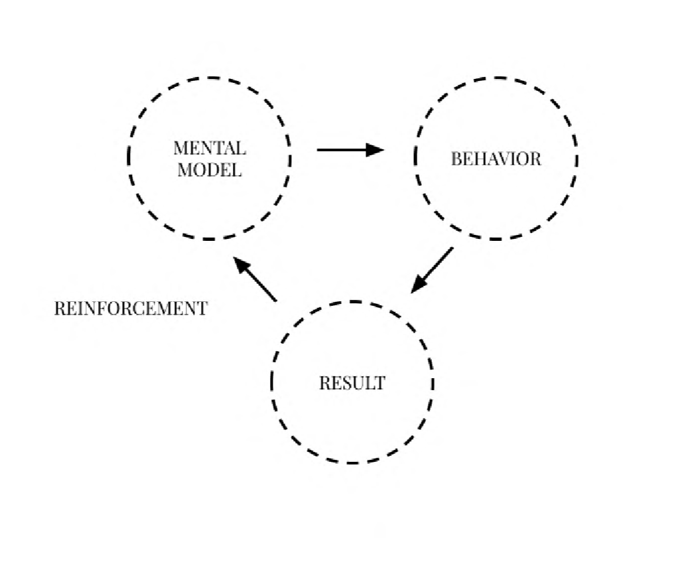

Gaining Practical GitHub and Wireframing Skills
Week 7
This week's coding tutorial and GitHub lecture expanded technical abilities. The wireframing lesson provided knowledge for iterative design using grayscale outlines, placeholder content, and style guides. Considering typography readability was informative. The interactive workshop allowed applying this knowledge in evaluating designs. The GitHub tutorial gave comprehensive guidance on version control and collaboration. It explained actions like commits, pushes, branches, and reverting changes. Both lectures highlighted the iterative nature of development. Wireframing iterations and GitHub for tracking changes made me understand how to better refine my work With a better understanding in wireframing and GitHub collaboration, I can visualize and develop websites methodically. The interactive workshops supported comprehending and applying concepts.
